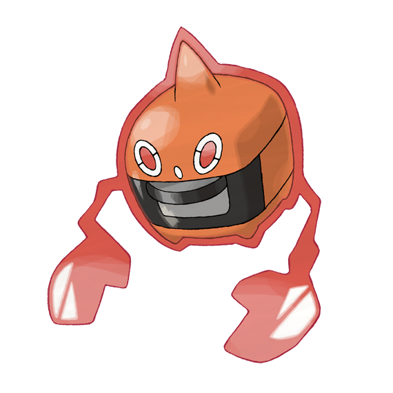
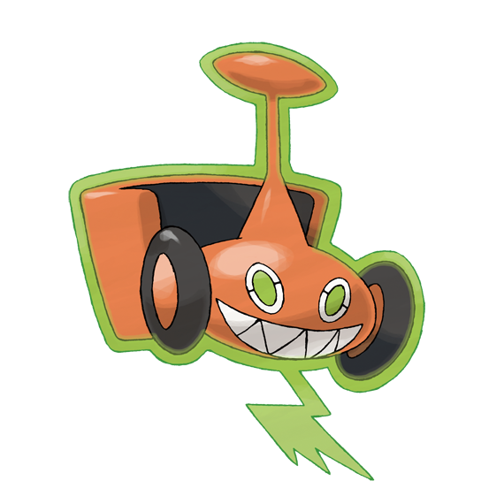
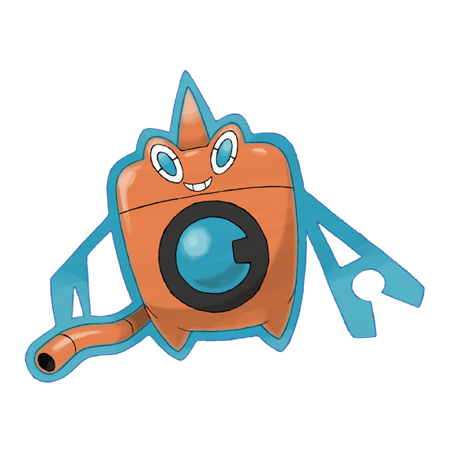
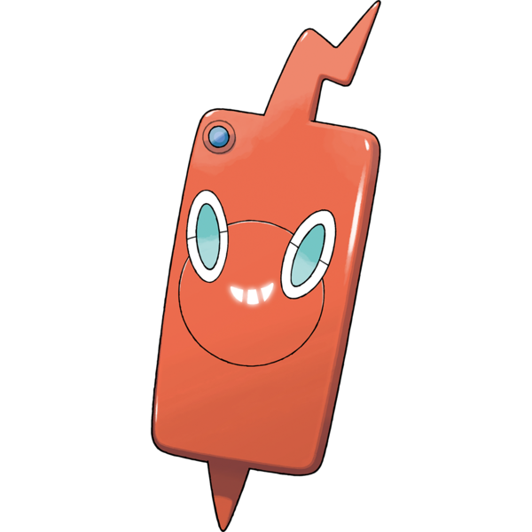
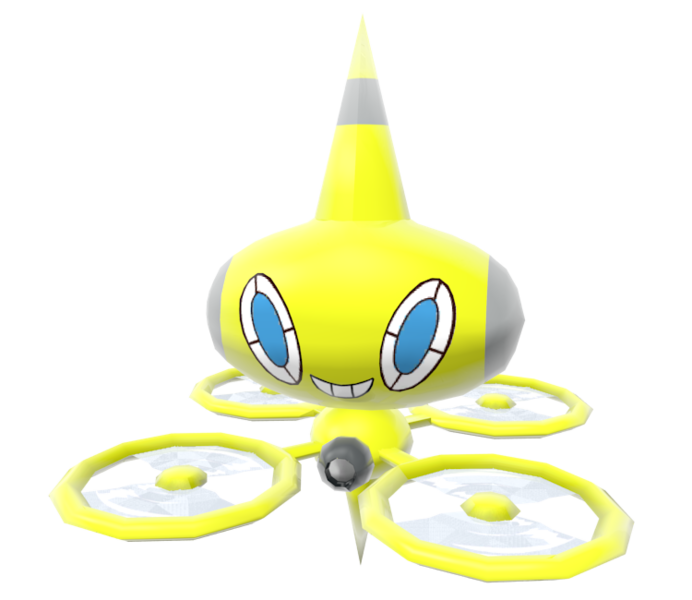
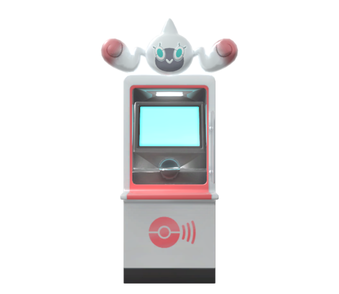

Pokemon #0479: Rotom
Rotom Summary
Rotom (ロトム) is a dual Electric-/Ghost-type Pokemon introduced in the 4th generation of pokemon.
While it is not known to evolve, it does have multiple other forms it can take by controlling appliances, 5 of which change Rotom's type.
Biology
Rotom is a small, orange Pokémon that has a body of plasma. It is mostly spherical, with a bulb below its body and a long pointed protrusion on top, making it shaped like a lightning rod. There is a whitish blue aura of electricity around it that forms lightning bolt-shaped appendages. It has teeth, and its unique, blue eyes have a dividing line across them. In its base form, Rotom cannot be touched by anyone without the latter being shocked in the process. According to the Rotom Catalog, Rotom in its base form is possessing a light bulb.
Rotom has the ability to enter and control appliances. Rotom typically use their abilities to make mischief, often using the household items they possess to pull pranks on unsuspecting people, as seen in the anime. Despite this, some Rotom have taken to inhabiting electronics with the intent of helping others. The Rotom Pokédex, Rotom Phones, Rotomi, Rotom Bike, and Drone Rotom are some examples. The creation of Rotom Pokédex in particular was inspired by Mow Rotom. Some of these particular forms allow Rotom to speak human languages. These forms show that Rotom is also highly intelligent. As also shown in the anime, Rotom has the ability to time travel. Rotom tends to reside in abandoned buildings. Research continues on Rotom and its ability to power unique motors.
Stats
Here are Rotom's base stats.
| HP | Attack | Defense | Special Attack | Special Defense | Speed |
|---|---|---|---|---|---|
| 50 | 50 | 77 | 95 | 77 | 91 |
When Rotom changes it's form, it's stats also change, as follows:
| HP | Attack | Defense | Special Attack | Special Defense | Speed |
|---|---|---|---|---|---|
| 50 | 65 | 107 | 105 | 107 | 86 |
Forms
As stated previously, Rotom can take on many forms depending on the appliance it's controlling. 5 of these forms change Rotom's stats and typing. The rest are just cosmetic. Well he basically has an unlimited amount of forms but since this is a game they kinda have a limit to what they can program. Am I getting off track?
Rotom Heat
Type: Electric-/Fire-type
Rotom Frost
Type: Electric-/Ice-type

Rotom Mow
Type: Electric-/Grass-type
Rotom Wash
Type: Electric-/Water-type
Rotom Fan
Type: Electric-/Flying-type

Additionally, Rotom has the following forms that are cosmetic:
Rotom Pokedex (he was at the top of the page, remember?)

Rotom Phone
Rotom Drone
Rotom Information
Or Rotomi, for short.
Order a Rotom
Would you like to have your very own Rotom???? I know I would!